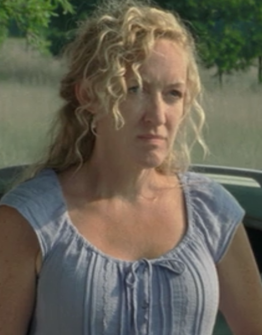

Maggie Greene

Maggie Rhee is a main character and a survivor of the outbreak in AMC's The Walking Dead. She is the eldest and only daughter of Hershel and Josephine Greene, step-daughter to Annette Greene, and older half-sister of Beth and younger step-sister to Shawn. She is the widow of Glenn Rhee, the mother of his unborn child, and is the last known surviving member of the Greene family. She's also the current leader of the Hilltop Colony, and one of the co-leaders of The Militia, along with Rick Grimes, Ezekiel and later Jadis.
Michonne

Michonne (pronounced mih-SHOWN) is a main character and a survivor of the outbreak in AMC's The Walking Dead. After the loss of her entire family, Michonne originally became a darker, ruthless and pragmatic survivor. After the Greene family farm was overrun by zombies, Michonne encountered Andrea where the two developed a close friendship throughout surviving together all winter until they eventually encountered Phillip Blake and entered Woodbury. After leaving Woodbury, she soon encountered Rick Grimes his group. Though initially distrustful of each other, Michonne was assimilated into the group, and upon her bonding with Carl she became a core member of Rick's group, as well as becoming his right-hand woman and eventually forming a relationship with him.
Beth Greene

Beth Greene is a main character and a survivor of the outbreak in AMC's The Walking Dead. She is the youngest daughter of Hershel and Annette Greene and the half-sister of Maggie and Shawn. She was in a relationship with Jimmy, another survivor of the apocalypse. After his death, she later began a relationship with Zach, who also died. She later formed a brief bond with Daryl Dixon until she was abducted by police officers enlisted in service under Dawn Lerner and forced to stay at Grady Memorial Hospital in Atlanta.
Hershel Greene

Hershel Greene is a main character and a survivor of the outbreak in AMC's The Walking Dead. He is a farm owner who lived in rural Georgia for many years with his family. Hershel is the father of Maggie and Beth Greene. He married twice, his first wife being Josephine Greene and his second wife being Annette Greene, who brought along her son from a previous marriage. With the passage of time, Hershel becomes the adviser of Rick Grimes.
Patricia
Patricia is a survivor of the outbreak in AMC's The Walking Dead. She is the wife of Otis and a resident at the Greene family farm.
Jimmy

Jimmy is a survivor of the outbreak in AMC's The Walking Dead. He is the teenage boyfriend of Beth Greene. He resides at the Greene Family farm in the aftermath of the apocalypse.
Randall Culver

Randall Culver is an antagonist and a survivor of the outbreak in AMC's The Walking Dead. Randall had been traveling in a group with Dave, Tony, Sean, Nate, and Jane and around thirty other survivors, before being taken hostage by Rick Grimes's group.